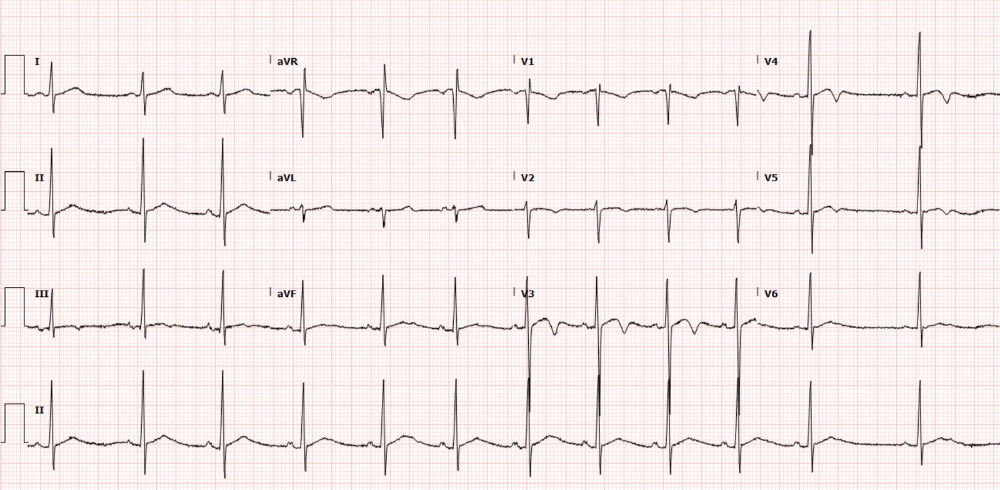
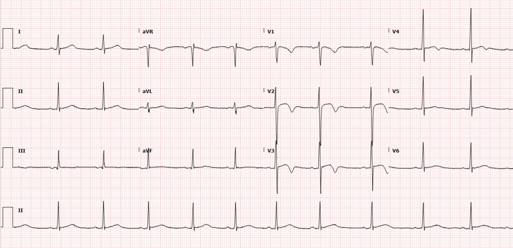
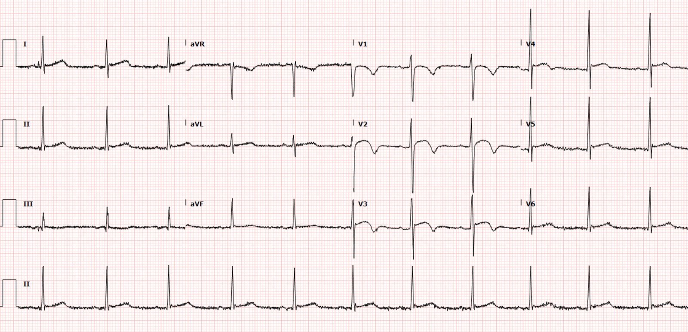
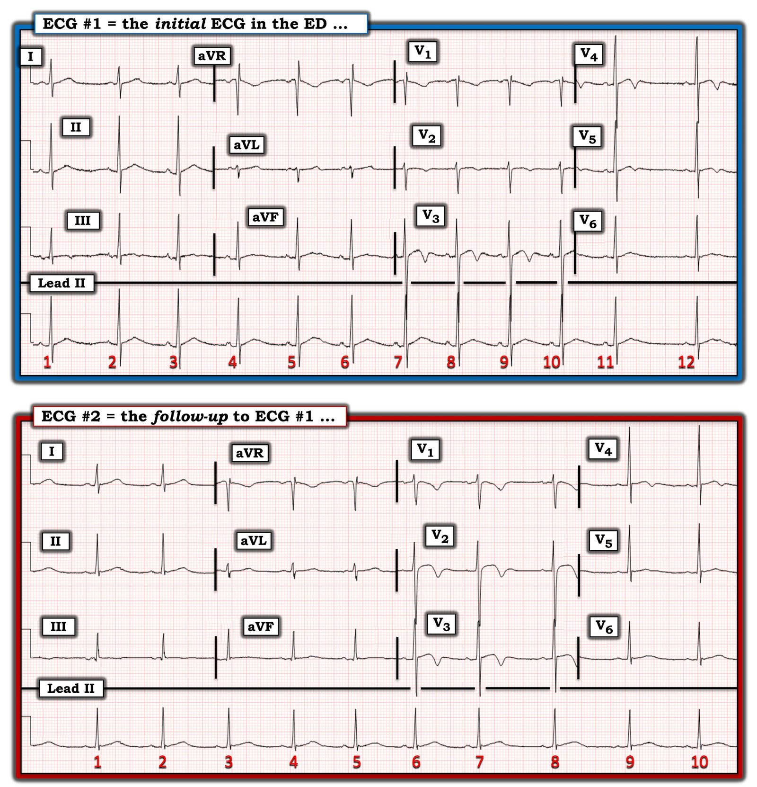
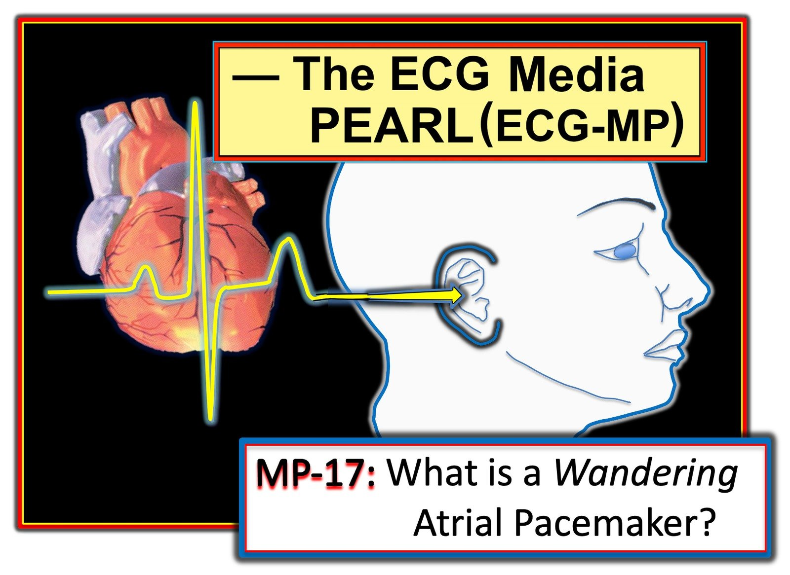
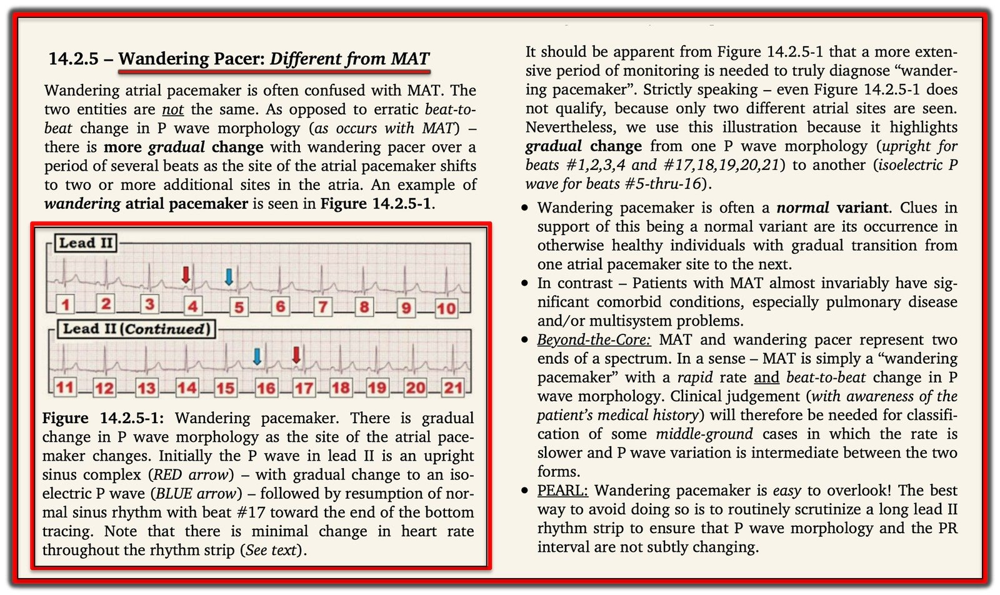

19/05/2022 — Đau ngực, khó thở, sóng T đảo ngược và troponin tăng dần ở một người chạy bộ trẻ khỏe mạnh.
Bản dịch tiếng Việt của bài "Chest pain, shortness of breath, T wave inversion, and rising troponin in a young healthy runner." – Dr. Smith’s ECG Blog. Giữ nguyên toàn bộ 7 hình ảnh của bản gốc.
Bài viết của Pendell Meyers, Smith và Grauer biên tập
Một người đàn ông cuối độ tuổi 20, có tiền sử hen phế quản, đến khoa cấp cứu (ED) vì một cơn đau ngực và khó thở thoáng qua sau khi chạy xong 4 dặm. Anh thường chạy 4 đến 8 dặm mỗi ngày. Cơn này bất thường với anh vì anh vẫn còn “thở hổn hển” khoảng 30 phút sau khi hoàn thành buổi chạy gắng sức dưới trời nóng ngoài trời. Không thấy ghi nhận bệnh nhân có ho hay không.
Vào thời điểm được đánh giá tại khoa cấp cứu, các triệu chứng của anh đã hết. Phần khám ghi nhận phổi trong.
Đây là điện tâm đồ của anh:


Meyers: Điện tâm đồ này cho thấy nhịp xoang, QRS bình thường với điện thế cao của người khỏe mạnh, và hình ảnh sóng T đảo ngược lành tính (benign T wave inversion, BTWI) ở V3-V5. Bác sĩ Smith và tôi đồng ý rằng đây là một điện tâm đồ biến thể bình thường, nói cách khác là BÌNH THƯỜNG, và không nên dựa vào điện tâm đồ này để thăm dò thêm, mà chỉ dựa vào triệu chứng và bệnh cảnh lâm sàng của bệnh nhân. Để xem mô tả chi tiết và các ví dụ về BTWI, xin mời bạn đọc bài viết gần đây khác của tôi: Understanding this pathognomonic ECG would have greatly benefitted the patient. (Hiểu được điện tâm đồ đặc hiệu chẩn đoán này lẽ ra đã giúp ích rất nhiều cho bệnh nhân.)
Bình luận của Smith: hình ảnh trong ca này quả thực lành tính và bình thường, nhưng hơi khác so với BTWI. Tôi đã gặp hình thái đặc biệt này nhiều lần, và nó luôn lành tính và gặp ở nam giới trẻ. Có sóng U nổi bật và sóng S sâu hơn nhiều ở V3 và V4 so với BTWI điển hình. Tôi không cho rằng điều đó tạo ra khác biệt gì trong xử trí.
Điện tâm đồ được đọc là đáng lo ngại cho Wellens (tức là hình ảnh tái tưới máu thành trước).
Troponin I độ nhạy cao ban đầu = 27 ng/L (giới hạn trên tham chiếu (URL) ở nam giới là 20 ng/L đối với xét nghiệm này).
Chụp CT mạch máu âm tính với thuyên tắc phổi (PE) hoặc bệnh lý nào khác trên hình ảnh. (Không chỉ định xét nghiệm D-dimer)
Troponin lặp lại cho kết quả 51 ng/L.
Anh được cho dùng aspirin và heparin rồi chuyển đến trung tâm tim mạch tại địa phương để đánh giá thêm.
Anh được chẩn đoán tổn thương thận cấp (AKI) mức độ nhẹ, sau đó đã hồi phục.
Chụp CT mạch vành cho thấy các động mạch vành bình thường.
Ghi chú của Smith: Tôi nghĩ chụp CT mạch vành là hợp lý khi có troponin tăng và triệu chứng. Nghiệm pháp gắng sức cũng sẽ hợp lý. Tôi luôn đo lưu lượng đỉnh (peak flow) ở một bệnh nhân như thế này, và nếu không đạt giá trị dự đoán thì cho albuterol rồi xem có cải thiện không.
Các lần troponin tiếp theo là 28, rồi 19, sau đó không đo thêm.
Thêm nhiều điện tâm đồ được ghi trong thời gian anh nằm viện.




Các triệu chứng đau ngực và khó thở của anh được quy cho một đợt cấp hen phế quản khi gắng sức.
Anh được cho xuất viện.
Đọc về “tăng troponin tim do gắng sức” tại đây. Dưới đây là vài trích dẫn từ bài báo:
“Cường độ và thời gian gắng sức, cùng với tần số tim cao do gắng sức, là những yếu tố dự báo nhất quán nhất cho tình trạng tăng troponin tim do gắng sức.“
“Tăng troponin do gắng sức thường gặp sau chạy đường dài, nhưng hiếm gặp (9%) sau đi bộ đường dài, ủng hộ vai trò then chốt của tần số tim cao trong quá trình này.“
“Kiểu phóng thích troponin lành tính có đặc điểm là nồng độ đỉnh tương đối thấp, xuất hiện trong vòng vài giờ sau gắng sức và trở về bình thường trong vòng 24 giờ, so với tình trạng tăng kéo dài hơn trong nhồi máu cơ tim hoặc viêm cơ tim.“
Ghi chú của bác sĩ Smith: Tôi sẽ không nhất thiết coi tình trạng này là HOÀN TOÀN “lành tính”. Nó lành tính so với nhồi máu cơ tim cấp, nhưng có thể những người có mức tăng troponin như vậy có nguy cơ tử vong dài hạn cao hơn. Thậm chí có thể những bệnh nhân có điện tâm đồ với hình thái này có nguy cơ dài hạn cao hơn. Điểm quan trọng cho mục đích của chúng ta là chúng không phản ánh nhồi máu cơ tim. Thật vậy, họ có tỷ lệ mắc các vấn đề cấu trúc cao hơn.
Potential Adverse Cardiovascular Effects From Excessive Endurance Exercise (Các tác động bất lợi tiềm tàng lên tim mạch do tập sức bền quá mức)
Exercise Is Medicine? The Cardiorespiratory Implications of Ultra-marathon (Vận động là thuốc? Những hệ quả tim-hô hấp của chạy siêu marathon)
Bjørkavoll‐Bergseth và cs. JAHA 2020.
https://www.ahajournals.org/doi/10.1161/JAHA.119.014408 (bài báo trên tạp chí JAHA)
177 người tham gia một cuộc đua xe đạp leo núi nghiệp dư dài 91 km được đánh giá trước cuộc đua, 3 giờ sau cuộc đua và 24 giờ sau cuộc đua, bao gồm đo cTnI và cTnT. Cả cTnI và cTnT đều tăng ở tất cả các cá nhân, đạt mức cao nhất lúc 3 giờ sau cuộc đua. Trong toàn bộ dữ liệu tần số tim ghi được trong cuộc đua, thời gian gắng sức với tần số tim trên 150 nhịp/phút tương quan tốt nhất với mức tăng troponin.
Trung vị cTnI lúc ban đầu là 1,9 (1,6–3,3) ng/L, tăng lên 60,0 (36,0–99,3) ng/L lúc 3 giờ (P<0,001) và giảm lúc 24 giờ xuống 10,9 (6,1–22,4) ng/L (P<0,001). Diễn biến tương tự được ghi nhận với cTnT: ban đầu, <3,0 (<3,0–3,8) ng/L; 3 giờ, 38,3 (25,6–55,2) ng/L (P<0,001); và 24 giờ, 11,0 (7,2–17,4) ng/L (P<0,001).
Paana và cs. International Journal of Cardiology 2019.
https://www.internationaljournalofcardiology.com/article/S0167-5273(19)32014-5/fulltext (toàn văn bài báo trên International Journal of Cardiology)
Trong nghiên cứu này, 40 vận động viên chạy marathon nam được cho là khỏe mạnh được đo troponin tim và các chỉ số khác trước và sau khi chạy marathon. 39 người (97,5%) có giá trị cTnT ban đầu dưới giới hạn tham chiếu (dưới 14 ng/L). 38 người (95%) trong số những người tham gia có nồng độ cTnT sau marathon tăng trên giới hạn tham chiếu này. Trung vị cTnT sau marathon là 41 ng/L, và nồng độ ở bách phân vị thứ 95 là 90 ng/L. Không ai báo cáo có “triệu chứng tim” sau cuộc đua.
Xem bài viết duy nhất này để thấy nhiều ví dụ về BTWI:
Understanding this pathognomonic ECG would have greatly benefitted the patient. (Hiểu được điện tâm đồ đặc hiệu chẩn đoán này lẽ ra đã giúp ích rất nhiều cho bệnh nhân.)
Thêm các ca liên quan đến BTWI:
A 60-something male presents with crushing chest pain (Một người đàn ông sáu mươi mấy tuổi đến viện vì đau ngực dữ dội như bị đè ép)
A 50-something Australian with sudden severe epigastric and chest pain presented looking extremely ill. (Một người Úc năm mươi mấy tuổi đột ngột đau dữ dội vùng thượng vị và ngực, đến viện trong tình trạng trông cực kỳ nặng.)
What does this ECG with significant ST Elevation represent? (Điện tâm đồ có ST chênh lên đáng kể này phản ánh điều gì?)
15 yo AAM with ST Elevation and T-wave Inversion. Hypertrophic Cardiomyopathy or Normal (“Variant”)? (Nam thiếu niên người Mỹ gốc Phi mười lăm tuổi có ST chênh lên và sóng T đảo ngược. Bệnh cơ tim phì đại hay bình thường (“biến thể”)?)
Two cases of ST Elevation with Terminal T-wave Inversion – do either, neither, or both need reperfusion? (Hai ca ST chênh lên kèm phần cuối sóng T đảo ngược – ca nào cần tái tưới máu: một trong hai, không ca nào, hay cả hai?)
T-wave inversions and dynamic ST elevation (Sóng T đảo ngược và ST chênh lên động)
Tachycardia, hyperthyroid, and ST elevation. What is it? (Nhịp nhanh, cường giáp và ST chênh lên. Đó là gì?)
2 Cases of Resolved Chest Pain with Dynamic Terminal T-wave Inversion (Hai ca đau ngực đã hết kèm phần cuối sóng T đảo ngược thay đổi động)
Is it Wellens’ Syndrome? (Có phải hội chứng Wellens?)
Anterior STEMI? (STEMI thành trước?)
Activate the Cath Lab? (Kích hoạt phòng thông tim?)
Young African American Male with Atypical Stabbing Chest Pain (Nam thanh niên người Mỹ gốc Phi đau ngực kiểu dao đâm không điển hình)
Benign T-wave Inversion: view video or read text (Sóng T đảo ngược lành tính: xem video hoặc đọc bài)

===================================
Bình luận của KEN GRAUER, MD (19/5/2022):
===================================
Bài trình bày ngắn gọn nhưng quan trọng của bác sĩ Meyers nhấn mạnh các điểm sau:
- Bệnh sử là MẤU CHỐT.
- Các hội chứng BTWI (sóng T đảo ngược lành tính – Benign T–Wave Inversion) thường bị nhầm với bệnh lý nghiêm trọng hơn.
- Tăng troponin do gắng sức (Exercise-Induced Troponin Elevation) — là một thực thể có thật. Theo bác sĩ Meyers — ca hôm nay là điển hình cho thực thể này vì: i) Troponin tăng ở một người trưởng thành vốn khỏe mạnh sau một đợt chạy đường dài; ii) Troponin đỉnh chỉ tăng ở mức tối thiểu; và, iii) Nồng độ troponin nhanh chóng trở về bình thường (trong khi tăng troponin của nhồi máu cơ tim cấp nhìn chung cao hơn và kéo dài hơn nhiều).
Về bệnh sử:
Qua bệnh sử, có vẻ như bệnh nhân này có ít nhất một thành phần đáng kể của EIA (hen phế quản do gắng sức – Exercise-Induced Asthma). Qua các sự việc được mô tả, có vẻ anh cũng không biết về khả năng này. Có nhiều biến thể của hen phế quản — bao gồm loại không do gắng sức — loại chủ yếu do gắng sức — và/hoặc — một sự kết hợp nào đó của 2 thực thể này. Rõ ràng, việc gắng sức quá mức do nhiệt độ quá nóng trong lúc bệnh nhân chạy có thể đã tạo thuận lợi để khởi phát co thắt phế quản vào ngày nhập viện.
- Chú ý khai thác bệnh sử có thể giúp làm rõ khả năng các triệu chứng của bệnh nhân này là (hay không phải là) hậu quả của EIA cao đến mức nào.
- Chẩn đoán xác định có thể đạt được bằng cách kết hợp bệnh sử (về hoàn cảnh xuất hiện triệu chứng, các biện pháp điều trị đã thử, và diễn tiến theo thời gian của bệnh hen ở bệnh nhân này) — với — nghe phổi và/hoặc đo lưu lượng đỉnh (có thể dễ dàng hướng dẫn bệnh nhân tự làm) trước và sau gắng sức.
- Xử trí EIA hiệu quả thường có thể đạt được nhờ bệnh nhân nhận biết về thực thể này — và — sử dụng thuốc giãn phế quản dự phòng và/hoặc sau gắng sức một cách thích hợp.
- Chuyển bệnh nhân đến bác sĩ chăm sóc ban đầu của họ (được bổ sung như một phần thiết yếu trong hướng dẫn xuất viện của bệnh nhân này) — có thể tạo thuận lợi cho việc xử trí lâu dài tối ưu (và hy vọng tránh được những lần đến khoa cấp cứu tái diễn trong tương lai vì cùng một vấn đề).
- Một bài tổng quan hay về EIA của Molis và Molis có thể tìm thấy trong Sports Health 2:311-317, 2010.
Về các điện tâm đồ trong ca hôm nay:
Dù tôi ngay lập tức nghi ngờ rằng điện tâm đồ ban đầu trong ca hôm nay là lành tính — tôi thấy nó có phần không điển hình, vì sóng T đảo ngược rất ít ở các chuyển đạo V1,V2 — và rõ rệt hơn nhiều ở các chuyển đạo V3,V4 (Xem điện tâm đồ #1 trong Hình 1).
- LƯU Ý #1: Rõ ràng có đặt sai vị trí các điện cực V1 và V2 (bị đặt quá cao trên ngực) — vì: i) Có phức bộ r’ tận ở chuyển đạo V1 — với hình thái QRS tổng thể rất giống phức bộ PQRST ở chuyển đạo aVR — và với sóng P âm hoàn toàn ở chuyển đạo V1 này; và, ii) Tôi sẽ không mong đợi biên độ sóng T đảo ngược giảm từ chuyển đạo V1 sang V2 — rồi lại tăng lên từ chuyển đạo V2 sang V3.
- Xin xem Bình luận của tôi ở cuối trang trong bài ngày 17 tháng Tư năm 2022 trên Blog của bác sĩ Smith — để có phần ôn tập ngắn gọn về cách nhận biết nhanh việc đặt quá cao vị trí của điện cực V1 và V2.
- Vì lý do nhập viện của bệnh nhân hôm nay chủ yếu là do điện tâm đồ ban đầu bị coi là “bất thường” và có thể là hội chứng Wellens — tôi sẽ ghi lại ngay điện tâm đồ ban đầu ngay khi vừa nhận ra việc đặt sai rõ ràng các điện cực V1,V2. Làm như vậy sẽ ngay lập tức cho ra một bản ghi lặp lại tương tự điện tâm đồ #2 — mà tôi thấy thậm chí còn điển hình hơn cho một biến thể BTWI kèm ST chênh lên (vì phức bộ QRS và hình dạng ST-T tiến triển hợp lý hơn nhiều khi đi từ chuyển đạo V1 đến V4).
- LƯU Ý #2: Ủng hộ việc các điện cực V1,V2 trong điện tâm đồ #1 thực sự bị đặt quá cao — là hình dạng của các chuyển đạo này trong điện tâm đồ #2, trong đó: i) Không còn thành phần r’ nào ở chuyển đạo V1; ii) Sóng P ở chuyển đạo V1 giờ đã có thành phần dương ban đầu; iii) Phức bộ rS ở chuyển đạo V1 của điện tâm đồ #2 không còn giống phức bộ Qr ở chuyển đạo aVR; và, iv) Giờ đây tăng tiến sóng R tự nhiên hơn nhiều khi đi từ chuyển đạo V1 sang V2 rồi sang V3, so với tăng tiến sóng R kém hợp lý hơn trong điện tâm đồ #1.
- LƯU Ý #3: Để ôn tập “nhiều gương mặt” của các biến thể ST-T lành tính — nhiều ví dụ được trình bày và bàn luận trong bài ngày 22 tháng Ba năm 2022 của bác sĩ Meyers — và trước đó, trong bài ngày 7 tháng Một năm 2015 trên Blog của bác sĩ Smith.
2 điểm cuối cùng:
- Chúng ta biết bệnh nhân trong ca hôm nay là người chơi thể thao (anh chạy 4-8 dặm mỗi ngày!) — nhưng chúng ta không được cho biết chủng tộc của anh. Điều này có liên quan — vì nhiều biến thể ST-T lành tính gặp nhiều hơn hẳn ở nam giới trẻ tuổi, chơi thể thao, người Mỹ gốc Phi. Nhận biết ưu thế chủng tộc này có thể hữu ích trong ước tính khả năng có hình ảnh điện tâm đồ biến thể bình thường.
- BẠN có để ý nhịp trong điện tâm đồ #1 không? Đây không phải là một nhịp xoang đơn thuần. Ngoài sự thay đổi rõ rệt của khoảng R-R suốt dải nhịp chuyển đạo II dài — dường như còn có thay đổi về hình thái sóng P (tức là sóng P có biên độ nhỏ hơn nhiều ở các tần số chậm hơn, trước các nhát #1, 2 và 12 trong dải nhịp chuyển đạo II dài — so với sóng P lớn hơn và có khía ở trước các nhát #3 đến 11). Sự thay đổi dần dần về hình thái sóng P khi tần số tim thay đổi này có thể phù hợp với ổ tạo nhịp nhĩ lang thang.
- Xin nhấn mạnh: WAP (ổ tạo nhịp nhĩ lang thang – Wandering Atrial Pacemaker) thường là một nhịp biến thể lành tính, không quan trọng về mặt lâm sàng trong ca hôm nay. Dù vậy — Ý của tôi là minh họa việc DỄ DÀNG đến thế nào để bỏ sót các nhịp không phải nhịp xoang nếu bạn không có cách tiếp cận hệ thống khi đọc điện tâm đồ (và nếu bạn không thường quy dành 3 đến 5 giây “có hiểu biết” để xem xét tính đều và tính nhất quán của hình thái sóng P trên dải nhịp chuyển đạo dài của mọi điện tâm đồ bạn gặp)!
- Về mặt kỹ thuật — Chúng ta không thể chẩn đoán chắc chắn WAP từ dải nhịp 12 nhát trong điện tâm đồ #1 — vì cần có sự chuyển đổi giữa ít nhất 3 vị trí ổ tạo nhịp nhĩ khác nhau mới thỏa tiêu chuẩn của WAP — trong khi chúng ta chỉ thấy 2 hình dạng sóng P khác nhau trên chuyển đạo II dài của điện tâm đồ #1.
- Ngược lại — sự khác biệt về hình thái sóng P tinh tế hơn trong điện tâm đồ #2 (và khó phân biệt hơn với sự thay đổi nhẹ về hình thái sóng P xoang đôi khi vẫn gặp bình thường).
- LƯU Ý: Xin xem Phần bổ sung bên dưới nếu bạn muốn biết thêm chi tiết về chẩn đoán WAP trên điện tâm đồ.


===================================
PHẦN BỔ SUNG:
Tôi ôn lại các đặc điểm MẤU CHỐT của ổ tạo nhịp nhĩ lang thang (Wandering Atrial Pacemaker) (khác với MAT) trong Audio Pearl dài 3:30 phút dưới đây:



